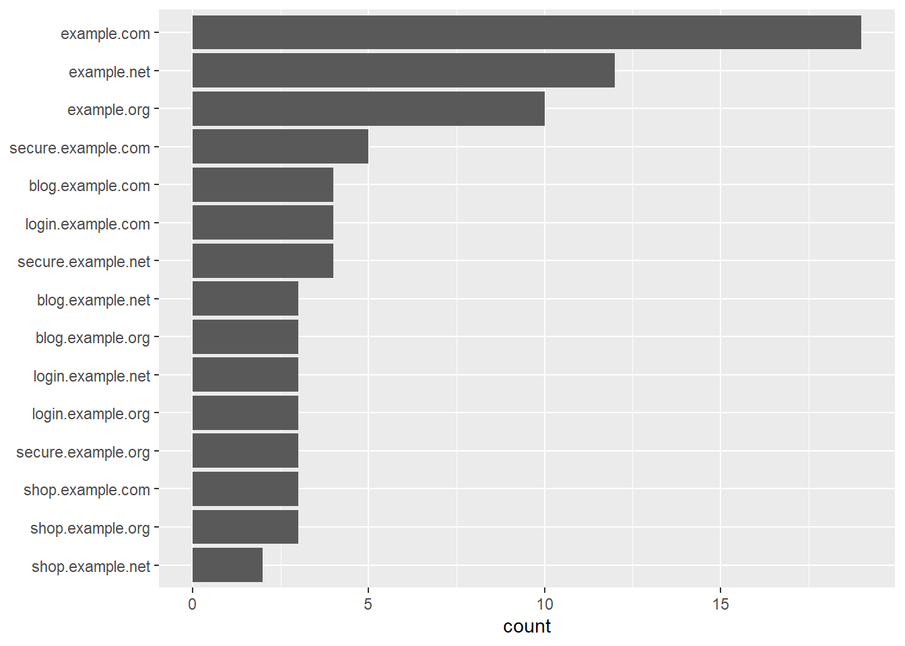

library(tidyverse)
library(urltools)Zadání
V dataframu, typicky třeba ze Screaming Frogu nebo Search Console, mám proměnnou obsahující URL. Chci přehledně zobrazit, z jakých částí se tato URL skládají.
Co na to potřebuju
Kromě obligátní tidyverse mi pomůže balíček urltools.
Příklad vstupních dat
Pomocí ChatGPT jsem vygeneroval vzorek náhodných URL a uložil do souboru url.csv.
sample_df <- read_csv("url.csv")Rows: 81 Columns: 1
── Column specification ────────────────────────────────────────────────────────
Delimiter: ","
chr (1): url
ℹ Use `spec()` to retrieve the full column specification for this data.
ℹ Specify the column types or set `show_col_types = FALSE` to quiet this message.sample_df# A tibble: 81 × 1
url
<chr>
1 http://example.com/index.html
2 https://blog.example.com/archive#february
3 http://example.net/about.html
4 https://secure.example.org/search?q=keyword
5 http://example.com/products/item1.html
6 https://secure.example.com/login?return_url=/account/dashboard
7 http://example.net/news/2023/02/17/headline
8 https://shop.example.com/cart?item=12345
9 http://example.org/resources/guide.pdf
10 https://login.example.com/
# … with 71 more rowsRozložení URL
URL nejprve rozložím na jednotlivé části podle RFC 3986. Zároveň přejmenuju některé sloupce tak, aby odpovídaly RFC.
sample_df <- read_csv("url.csv") |>
bind_cols(url_parse(sample_df$url)) |>
rename(host = domain) |>
rename(query = parameter)
sample_df# A tibble: 81 × 7
url scheme host port path query fragm…¹
<chr> <chr> <chr> <chr> <chr> <chr> <chr>
1 http://example.com/index.html http exam… <NA> inde… <NA> <NA>
2 https://blog.example.com/archive#febr… https blog… <NA> arch… <NA> februa…
3 http://example.net/about.html http exam… <NA> abou… <NA> <NA>
4 https://secure.example.org/search?q=k… https secu… <NA> sear… q=ke… <NA>
5 http://example.com/products/item1.html http exam… <NA> prod… <NA> <NA>
6 https://secure.example.com/login?retu… https secu… <NA> login retu… <NA>
7 http://example.net/news/2023/02/17/he… http exam… <NA> news… <NA> <NA>
8 https://shop.example.com/cart?item=12… https shop… <NA> cart item… <NA>
9 http://example.org/resources/guide.pdf http exam… <NA> reso… <NA> <NA>
10 https://login.example.com/ https logi… <NA> <NA> <NA> <NA>
# … with 71 more rows, and abbreviated variable name ¹fragmentStatistika protokolů a hostnames
Z rozložených dat už snadno spočítám jednotlivé složky. Pro vizualizaci použiju ggplot s geomem geom_bar, který automaticky ukazuje počty, takže není třeba používat funkce count nebo n. Aby byly grafy seřazené od nejvyššího počtu po nejnižší, použiju fct_infreq a případně fct_rev z balíčku forcats.
Protokoly
sample_df |>
ggplot(aes(x = scheme)) +
geom_bar()Hostnames
sample_df |>
ggplot(aes(y = fct_rev(fct_infreq(host)))) +
geom_bar() +
labs(y = NULL)
Jen domény druhého řádu
Doménu druhého řádu vykousnu z hostname regulárním výrazem.
sample_df |>
transmute(domain = str_extract(host, "[^.]+\\.[^.]+$")) |>
ggplot(aes(x = fct_infreq(domain))) +
geom_bar() +
labs(x = NULL)Rozložení cesty na složky
Nejprve musím zjistit maximální počet lomítek.
max_level <- sample_df |>
mutate(level = str_count(path, "/") + 1) |>
pull(level) |>
max(na.rm = TRUE)Nyní rozložím cestu pomocí tidyr::separate.
sample_df |>
select(path) |>
separate(path, into = paste0("l", 1:max_level), sep = "/", fill = "right")# A tibble: 81 × 5
l1 l2 l3 l4 l5
<chr> <chr> <chr> <chr> <chr>
1 index.html <NA> <NA> <NA> <NA>
2 archive <NA> <NA> <NA> <NA>
3 about.html <NA> <NA> <NA> <NA>
4 search <NA> <NA> <NA> <NA>
5 products item1.html <NA> <NA> <NA>
6 login <NA> <NA> <NA> <NA>
7 news 2023 02 17 headline
8 cart <NA> <NA> <NA> <NA>
9 resources guide.pdf <NA> <NA> <NA>
10 <NA> <NA> <NA> <NA> <NA>
# … with 71 more rowsPro rozloženou cestu už jde spočítat jakákoli statistika, např. nejčastější složky první úrovně.
sample_df |>
select(path) |>
separate(path, into = paste0("l", 1:max_level), sep = "/", fill = "right") |>
count(l1) |>
drop_na() |>
slice_max(n, n = 10)# A tibble: 10 × 2
l1 n
<chr> <int>
1 products 10
2 contact-us 6
3 about 5
4 account 5
5 login 5
6 news 5
7 services 5
8 blog 4
9 resources 4
10 search 4Rozložení parametrů
Jednotlivé parametry jde získat funkcí urltools::param_get.
sample_df |>
pull(url) |>
param_get() |>
slice_head(n = 10) color item q redirect return_url size status
1 <NA> <NA> <NA> <NA> <NA> <NA> <NA>
2 <NA> <NA> <NA> <NA> <NA> <NA> <NA>
3 <NA> <NA> <NA> <NA> <NA> <NA> <NA>
4 <NA> <NA> keyword <NA> <NA> <NA> <NA>
5 <NA> <NA> <NA> <NA> <NA> <NA> <NA>
6 <NA> <NA> <NA> <NA> /account/dashboard <NA> <NA>
7 <NA> <NA> <NA> <NA> <NA> <NA> <NA>
8 <NA> 12345 <NA> <NA> <NA> <NA> <NA>
9 <NA> <NA> <NA> <NA> <NA> <NA> <NA>
10 <NA> <NA> <NA> <NA> <NA> <NA> <NA>Získanou širokou tabulku lze pak převrátit na dlouhou a spočítat statistiku parametrů i jejich hodnot.
sample_df |>
pull(url) |>
param_get() |>
pivot_longer(cols = everything()) |>
drop_na() |>
count(name, sort = TRUE)# A tibble: 7 × 2
name n
<chr> <int>
1 q 4
2 status 3
3 color 2
4 item 2
5 redirect 2
6 return_url 2
7 size 2sample_df |>
pull(url) |>
param_get() |>
pivot_longer(cols = everything()) |>
drop_na() |>
group_by(name) |>
summarise(
n = n(),
values = paste(unique(value), collapse = ", ")
) |>
arrange(desc(n))# A tibble: 7 × 3
name n values
<chr> <int> <chr>
1 q 4 keyword
2 status 3 shipped, pending, completed
3 color 2 red, blue
4 item 2 12345, 67890
5 redirect 2 /dashboard
6 return_url 2 /account/dashboard, /dashboard
7 size 2 medium, large A to je všechno :-)